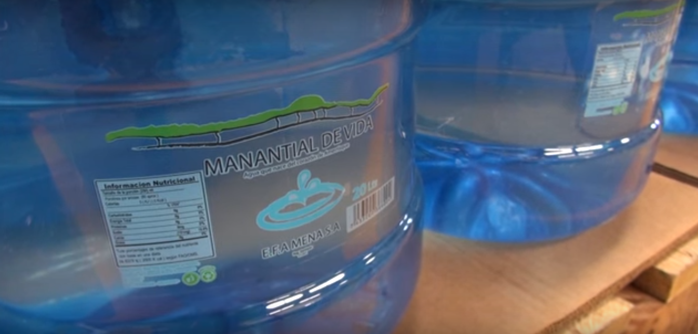
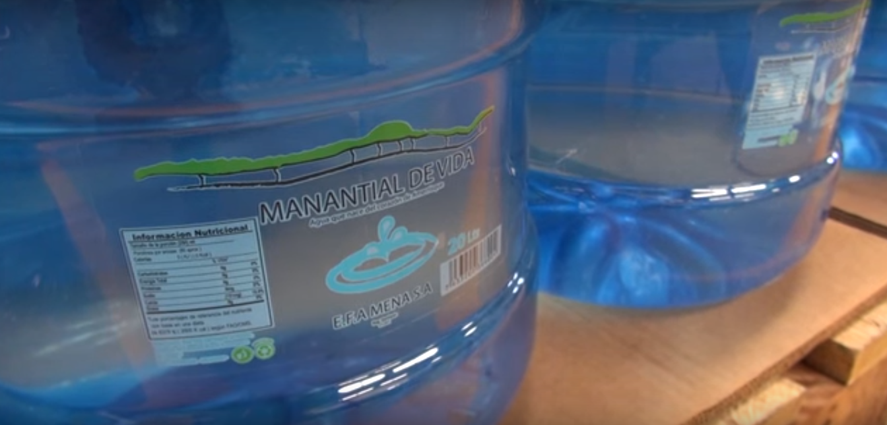

Servicios
Facilitando el proceso de pedidos de agua purificada, al mejor precio y el mejor producto.
Facilitando el proceso de pedidos de agua purificada, al mejor precio y el mejor producto.
La cordillera de amerrisque es la espina central de Nicaragua y forma parte de la Cordillera centroamericana que se extiende a lo largo de Nicaragua, desde Honduras hasta Costa Rica. allí en la llamada cordillera de amerrisque formada por mesetas y elevaciones escarpadas y los cerros de la Cordillera chontaleña se encuentra la reserva natural Sierra de amerrisque.
En la reserva natural sierra de amerrisque a 152 kilómetros de Managua en medio de un bosque natural y virgen tiene su origen agua Manantial de vida, agua que nace y se basa en su origen, Esta agua brota de un Manantial en medio de la reserva natural, una reserva que dentro de los límites de nuestra propiedad la empresa se encarga de mantener virgen.
En la parte alta de la cordillera se recibe la lluvia a medida que el aire se enfría por la altura y la humedad contenida en las nubes se condensa, esto permite a las plantas atrapar agua directamente del aire, la vegetación retiene el agua por un tiempo y luego la libera lentamente, eso permite que el agua se filtre de manera constante entre las grietas del suelo rocoso.
y todo esto sirve para que el interior de la montaña se convierta en una esponja de piedra caliza que almacena enormes cantidades de agua. El paso lento del agua a través de las rocas elimina todas las impurezas y los microorganismos la montaña entera se convierte en un enorme filtro natural que purifica el agua en su interior sin intervención humana alguna.